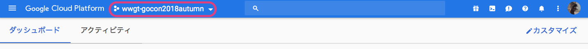

Go Conference 2018 Autumn に実施するコードラボのための準備を行います。
Google App Engine を利用するためには、Google Cloud Platform のプロジェクトが必要になります。今回は、Go Conference 2018 Autumn のために用意したプロジェクトを利用します。
プロジェクトのアクセス制御に Google Groups を利用しているため、お知らせした Group に参加してください。
下記のURLから Google Cloud Console にアクセスし、プロジェクトを選択しましょう。
https://console.cloud.google.com/

用意しているプロジェクトは、下記の通りです。
これは、公開コマンドのアプリケーションIDとしても利用します。
コードラボの Google App Engine に公開する で必要になります。
コマンドは下記の通りです。
$ goapp deploy --application wwgt-gocon2018autumn --version {配布したバージョン} .このコードラボを始める前にバージョンを配布するので、それを利用してください。
複数人で同じアプリケーションを用いて開発する場合、異なるバージョンでアプリケーションを公開することで、お互いのアプリケーションの上書きを避けることができます。
コードラボの アプリケーションを確認する で必要になります。
下記のURLを確認してください。
それでは, はじめましょう！